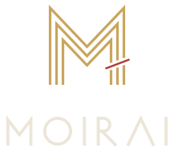
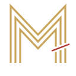
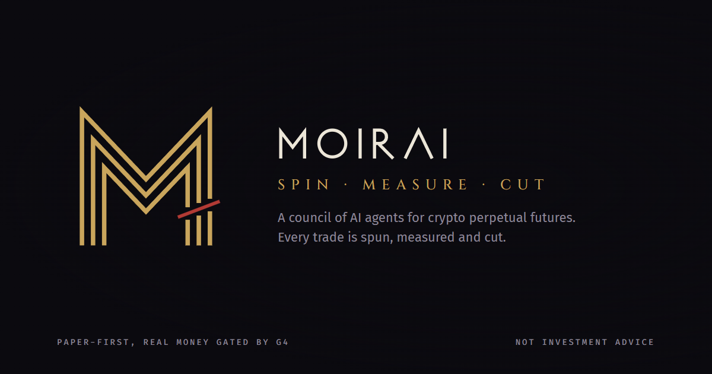
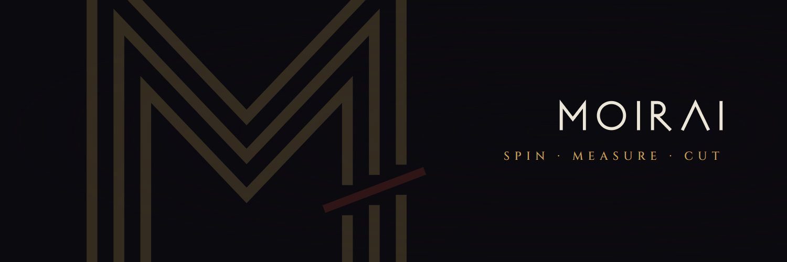
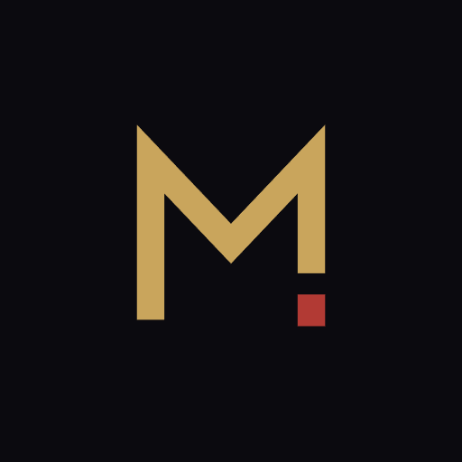
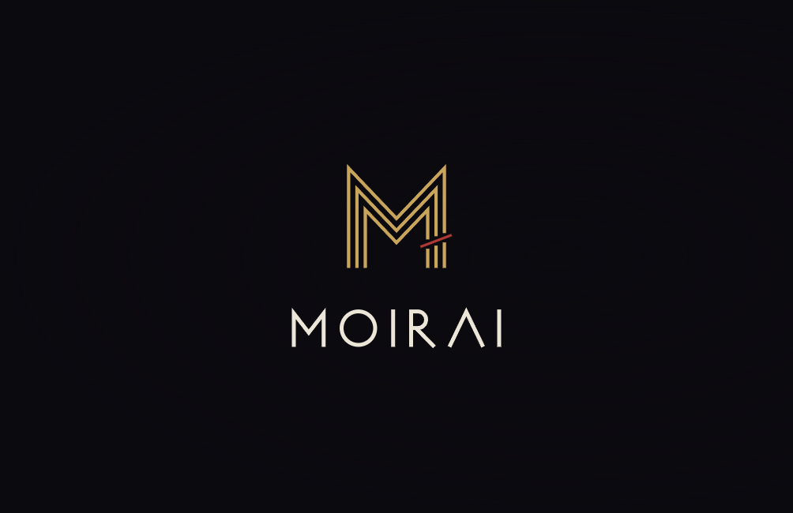
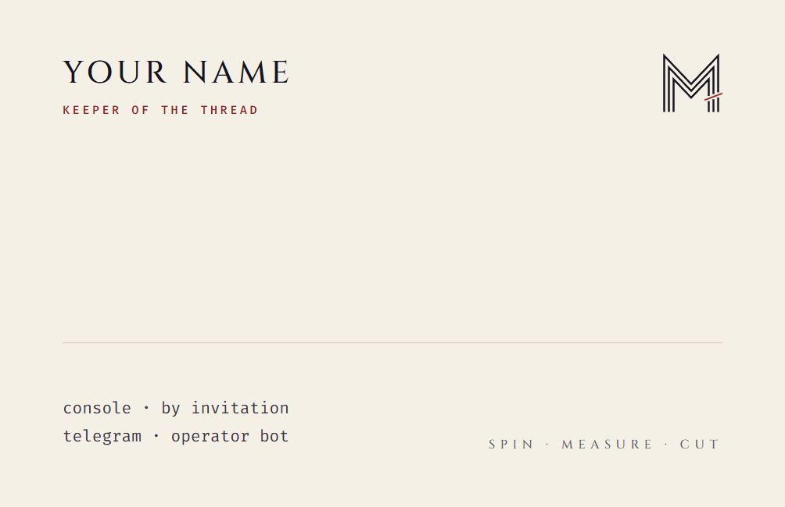

Three sisters, one thread
In Greek myth the Moirai decide every fate with a single thread. One spins it, one measures it, one cuts it. Moirai is a council of AI agents that trades crypto perpetual futures, and every trade it makes passes through the same three hands.
spins
The council debates and spins a thesis: direction, probability, levels.
measures
Risk measures the thread: size, leverage and limits, signed before anything is sent.
cuts
The stop cuts the loss. Without hesitation, without appeal.
A thread drawn as a price path

Read it three ways
An M for Moirai. A price path: up, down, up, down. Three parallel strands for the three sisters: the thesis, the sizing and the exit. A thin blade crosses the last leg: Atropos cuts, the stop is honoured.
The solid mark
One heavy strand for small sizes. The severed end falls away as a single block, so the mark reads as a full stop: the decision is final.
Lockups

Horizontal
Default. Console header, documents, social profiles.
Horizontal, ink
On paper and light backgrounds. The blade stays oxblood.
Stacked
Covers, posters, splash screens.
Wordmark
Monoline capitals drawn at the strand weight. The A is a Greek lambda with no crossbar, an M turned upside down.
Clear space
Keep one quarter of the mark height free on every side. Nothing enters this zone: no text, no edge, no other mark.
Minimum sizes
Three strands need room. Below 40 px use the solid mark; below 24 px use the favicon, which is the solid mark on obsidian.
Night, gold and one drop of blood
Proportion 70 : 18 : 8 : 3 : 1. Oxblood is the blade and nothing else; it is never text on dark (contrast 2.7:1). Gilt and Bone pass 4.5:1 on Obsidian and Night. Gain and loss in data keep the console colours (green, red, always with a sign); Oxblood is not a loss colour.
Carved capitals, working numbers
Display only: headlines, covers, section titles. Capitals, tracking +0.14em. Roman inscription letters, the voice of an old oath. Never for body text or numbers.
Fira Sans for text, Fira Code with tabular figures for prices, sizes and ids. Already self-hosted in the console.
Speak like the oracle, report like an auditor
Few words. Certain about what happened, humble about what will. Moirai never promises returns and never hides a loss.
| Say | Never |
|---|---|
| The council spun a LONG on SOL. Risk measured 0.4% of equity. Stop at 142.10. | AI found a guaranteed 10x play! |
| Thread cut at 142.10. -0.38%. | Small dip, we're holding for the rebound. |
| No trade. The sisters did not agree. | Nothing interesting today, check back later! |
Words that belong: spin, measure, cut, thread, council. Words that do not: moon, guaranteed, easy, emoji.
Do not
Recolour the thread or turn the blade gold.
Rotate, skew or mirror the mark.
Add glow, gradients, bevels or shadows.
Put the gilt mark on a light ground. Use the ink version.
In the world

Link preview card
1200 x 630. Public dashboard and shared links.

Social header
1500 x 500.

Telegram bot and app icon
512 x 512, safe inside a circle crop.


Card
85 x 55 mm, 1004 x 650 px at 300 dpi.